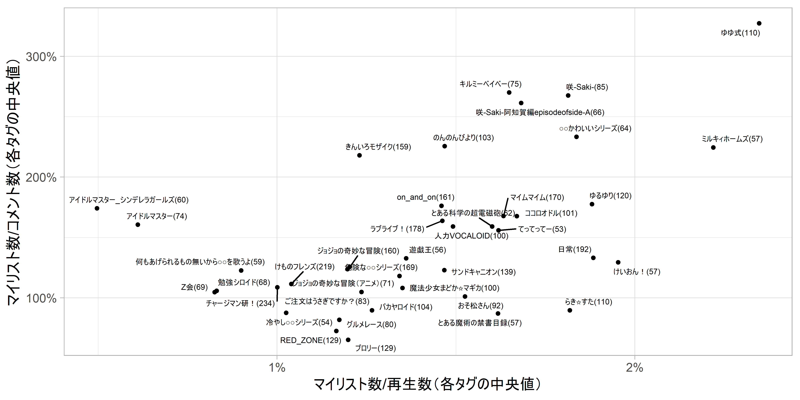

ニコニコ動画においては、一般に、動画のマイリスト数がコメント数を上回っている動画は、埋もれた名作である可能性があるとされています。
私は音MAD、特にアニメ系の音MAD（アニメのキャラクターの会話などを切り貼りして別の音楽のリズムに乗せた二次創作の動画）をよく視聴するのですが、このジャンルにおいては多くの動画でマイリスト数がコメント数を上回り、マイリスト数がコメント数の2倍付く動画も珍しくないという印象を持っていました。
そこで、ニコニコ動画のスナップショット検索APIを叩くことで、ニコニコ動画における再生数が5000以上のアニメ系音MADの各動画の再生数、マイリスト数、コメント数を取得しました。そして、動画のタグごとにマイリスト数/再生数とマイリスト数/コメント数の中央値を集計しました。これにより、アニメ系音MADにおいて、マイリスト数/再生数やマイリスト数/コメント数が大きいタグを調べました。
その結果、一部のタグのアニメ系音MADでは、マイリスト数/コメント数の中央値が2を超えることが分かりました。これはすなわち、そのタグが付いているアニメ系音MADにおいては、マイリスト数がコメント数の2倍あるというのが「平均的」であるということを意味します。
なお以降、音MADとは「音MAD」をタグに持つ動画、アニメ系音MADとは、音MADのうち、ジャンルが「アニメ」である動画と定義します。
ニコニコ動画から提供されているスナップショット検索APIを用いると、キーワードやフィルタ条件に当てはまる動画について、再生数やマイリスト数、コメント数などのメタ情報を取得できます。なお、APIのデータの更新頻度は日次です。このAPIを叩くことで、「音MAD」のタグを持つ動画の一覧を取得します。
APIを叩いたのが2021/3/27であるため、以下で使用するのは2021/3/27時点のデータです。
APIの仕様上、APIへのアクセス1回で取得できる動画情報の動画数は100件までで、最大100000件までoffsetすることができます。今回取得したい「音MAD」のタグを持つ動画は全部で90200件程度あるので、再生回数を降順ソートした結果を一度に100件ずつ取得し、offsetで100件ずつずらして繰り返し取得することで全ての結果を取得できます。APIを叩くときは毎回10秒のスリープを入れています。
library(tidyverse)
library(lubridate)
library(jsonlite)
library(xml2)
library(ggrepel)
# 指数表記（100000を1e+5と表記する）を避ける
options(scipen = 100)
# APIに渡すクエリパラメータ
q <- str_glue("&q={xml2::url_escape('音MAD')}")
targets <- "&targets=tagsExact"
fields <- "&fields=contentId,title,description,viewCounter,mylistCounter,lengthSeconds,thumbnailUrl,startTime,lastResBody,commentCounter,lastCommentTime,categoryTags,tags,genre"
filters <- ""
jsonFilter <- ""
sort <- "&_sort=-viewCounter"
limit <- "&_limit=100"
context <- "&_context=apiguide"
# 「音MAD」でタグ検索をすると90200件程度ヒットするので、91000としておく
max_count <- 91000
url <- map_chr(seq(0,max_count,100),~{
offset <- str_glue("&_offset={.x}")
url <- str_glue("https://api.search.nicovideo.jp/api/v2/snapshot/video/contents/search?{q}{targets}{fields}{filters}{jsonFilter}{sort}{offset}{limit}{context}")
})
res <- url %>%
map(~{
Sys.sleep(10)
tryCatch({
cat(str_glue("{Sys.time()} {.x}"),"\n")
return(jsonlite::fromJSON(.x))
},error=function(e){
print(.x)
print(e)
return(NULL)
})
})
df <- res %>%
map_dfr("data") %>%
mutate(across(c(startTime,lastCommentTime),as.POSIXct))APIを用いると、このような行が各動画であるdata.frameが得られます（行と列が多いので一部のみ抜粋します）。
df %>%
filter(genre=="アニメ") %>%
arrange(desc(viewCounter)) %>%
select(mylistCounter,viewCounter,commentCounter,title,genre,startTime,tags,contentId) %>%
head(1) %>%
knitr::kable(.)| mylistCounter | viewCounter | commentCounter | title | genre | startTime | tags | contentId |
|---|---|---|---|---|---|---|---|
| 57054 | 5954562 | 163684 | ねずみフレンズ ～ようこそディズニーランドへ～ | アニメ | 2017-02-26 18:41:23 | アニメ おとまっどちほー けものフレンズ ディズニー ディズニーMAD ニコニコディズニーツアー ミッキーマウス ようこそジャパリパークへ 投稿者コメント 音MAD 音系MAD | sm30717222 |
以降、投稿日が2020/12/31までの動画のみを分析対象とします。
df <- df %>%
mutate(date=as.Date(startTime,tz="Asia/Tokyo")) %>%
mutate(year=as.factor(lubridate::year(date))) %>%
filter(date<=as.Date("2020-12-31"))音MADとアニメ系音MADの動画の本数の規模感を掴むために、まずは音MADとそのうちアニメ系音MADの、投稿年別の動画の本数を示します。“anime”はアニメ系音MADの本数、“all”は音MADの本数、“percent”はアニメ系音MADの本数/音MADの本数（%）を指します。
full_join(
df %>%
filter(genre=="アニメ") %>%
count(year,name="anime"),
df %>%
count(year,name="all"),
by="year"
) %>%
mutate(percent=anime/all*100)## # A tibble: 14 x 4
## year anime all percent
## <fct> <int> <int> <dbl>
## 1 2007 38 232 16.4
## 2 2008 186 1276 14.6
## 3 2009 279 2112 13.2
## 4 2010 731 3778 19.3
## 5 2011 1288 5015 25.7
## 6 2012 1420 5785 24.5
## 7 2013 1260 5005 25.2
## 8 2014 1004 4774 21.0
## 9 2015 1076 5803 18.5
## 10 2016 913 7629 12.0
## 11 2017 1068 8860 12.1
## 12 2018 839 9451 8.88
## 13 2019 1065 10762 9.90
## 14 2020 1382 15560 8.88以下のことが分かります。
アニメ系音MADのうち、再生数が5000以上（※後述）の動画のみを以降の分析に用います。
その各動画において、マイリスト数/再生数とマイリスト数/コメント数を計算します。そして、動画のタグごとのそれらの中央値を算出します。これによって、各タグの動画におけるマイリスト数/再生数とマイリスト数/コメント数の「平均的な値1」を求めることができます。
※：再生数が少ない動画はマイリスト数とコメント数も少ないです。その場合、マイリスト数とコメント数の多少の値の違いがマイリスト数/再生数とマイリスト数/コメント数の値に大きく影響を及ぼすので、再生数を5000以上に限定しています。5000という数字は、再生数が5000あれば一定程度視聴された動画と言えるであろうという、一ニコニコ動画ユーザとしての私の印象に基づきます。
df_anime <- df %>%
filter(genre=="アニメ")
# APIの仕様上、各動画のタグが半角スペースで連結されているので、1行1タグに分割したdata.frameを用意する
df_anime_split <- df_anime %>%
mutate(tags_split=str_split(tags," ")) %>%
unnest(tags_split)
res <- df_anime_split %>%
# アニメ系音MADにアニメや音(MAD|mad|音ＭＡＤ)というタグが付いているのはある種当たり前で分析に役立たないから
# MADという文字列が含まれるタグは「のんのんびよりMAD」などであり、「のんのんびより」という別のタグとほぼ等価であるから
filter(!tags_split %in% c("アニメ","音MAD","音mad","音ＭＡＤ"),
str_detect(tags_split,"MAD",negate=T)) %>%
filter(viewCounter>=5000) %>%
mutate(
mc_prop=mylistCounter/commentCounter,
mv_prop=mylistCounter/viewCounter,
cv_prop=commentCounter/viewCounter
) %>%
group_by(tags_split) %>%
summarize(
mc_q50=median(mc_prop,na.rm=T),
mv_q50=median(mv_prop,na.rm=T),
cv_q50=median(cv_prop,na.rm=T),
v_q50=median(viewCounter,na.rm=T),
c_q50=median(commentCounter,na.rm=T),
m_q50=median(mylistCounter,na.rm=T),
n=n(),
.groups="drop"
) %>%
arrange(desc(n))各動画のマイリスト数/再生数とマイリスト数/コメント数を、タグごとに集計して、前者を横軸、後者を縦軸に取って散布図を書いたものが下図です。ただし図示しているのは、タグごとの再生数が5000以上である動画数の上位60位程度までのタグの中から私が選んだ40個のタグ（素材であるアニメ名や音楽名などを表すタグ）に絞っています2。かっこ内の数字はそのタグが付された動画の数です。
例えば、「のんのんびより」のタグが付された再生数5000以上のアニメ系音MADは103本あり、マイリスト数/再生数の中央値は約1.5%、マイリスト数/コメント数の中央値は約230%であることを表します。
# これらのタグについて図示する（並んでいる順番は動画数が多い順）
tags_extract <- c(
"チャージマン研！","けものフレンズ","日常","ラブライブ！","マイムマイム",
"危険な○○シリーズ","on_and_on","ジョジョの奇妙な冒険","きんいろモザイク","サンドキャニオン",
"RED_ZONE","ブロリー","ゆるゆり","ゆゆ式","らき☆すた",
"バカヤロイド","のんのんびより","ココロオドル","人力VOCALOID","魔法少女まどか☆マギカ",
"おそ松さん","咲-Saki-","ご注文はうさぎですか？","グルメレース","キルミーベイベー",
"アイドルマスター","ジョジョの奇妙な冒険（アニメ）","Z会","勉強シロイド","咲-Saki-阿知賀編episodeofside-A",
"○○かわいいシリーズ","とある科学の超電磁砲","アイドルマスター_シンデレラガールズ","何もあげられるもの無いから○○を歌うよ","けいおん！",
"とある魔術の禁書目録","ミルキィホームズ","遊戯王","冷やし○○シリーズ","てってってー"
)
res %>%
filter(tags_split %in% tags_extract) %>%
mutate(label=str_glue("{tags_split}({n})")) %>%
ggplot(aes(mv_q50,mc_q50,label=label))+
geom_point(size=1)+
theme_light()+
ggrepel::geom_text_repel(size=2,max.overlaps=Inf)+
scale_x_continuous(breaks=seq(0,0.1,0.01),labels=scales::percent_format(accuracy=1))+
scale_y_continuous(breaks=seq(0,3.5,1),labels=scales::percent)+
labs(x="マイリスト数/再生数（各タグの中央値）",
y="マイリスト数/コメント数（各タグの中央値）")
図より、以下の内容が読み取れます。
とりわけゆゆ式が右上に飛び抜けていますね。マイリスト数/コメント数の中央値が約330%というのは驚きです。マイリスト数/コメント数が大きいゆゆ式、キルミーベイベー、のんのんびより、きんいろモザイク辺りのタグが付いている動画は、マイリスト数/コメント数が大きいのではないか？とアニメ系音MADを見て感じていたのですが、その感覚がデータで裏付けられた印象です3。この辺りの動画はコメントをするよりもマイリストに入れて作業用BGMのような形で流すという形で視聴されるような動画が多いのかもしれません。
反対に、縦軸の下の方に点がある、すなわちマイリスト数/コメント数が小さいタグは、図の通りコメントが盛り上がるタイプのタグであるという印象があります。
本分析で見た通りアニメ系音MADではマイリスト数/コメント数の中央値は100%を超えるタグが多かったですが、これはアニメ系音MADという分野がそうであっただけであり、全く異なる結果、すなわちマイリスト数がコメント数を上回らないのが普通という動画の分野も当然あると思われます。
また、本分析では再生数が5000以上の動画に限定して分析しましたが、これを3000以上や10000以上などに変更したとしても、得られる結果に大きな差はありません。マイリスト数/コメント数やマイリスト数/再生数の値が若干変わる程度であり、それらの値のタグ間での大小が大きく変わる、すなわち、再生数が5000以上の動画に限定した本分析ではマイリスト数/コメント数が非常に大きいタグが、再生数が3000以上の動画に変更すると非常に小さくなる、というようなことはありませんでした。